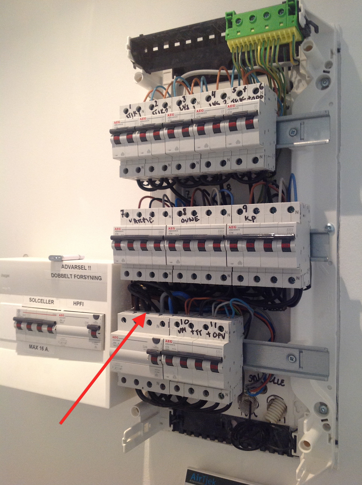
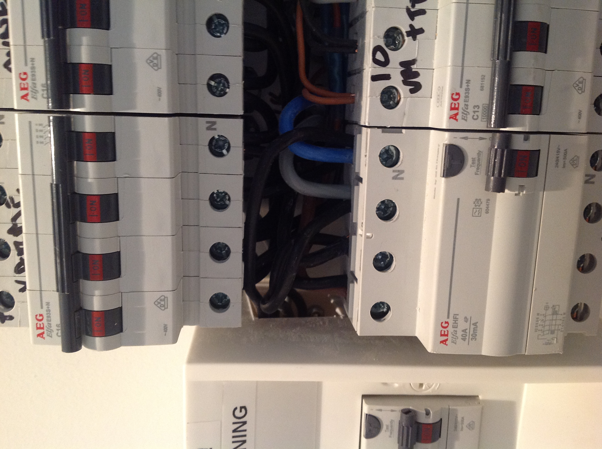
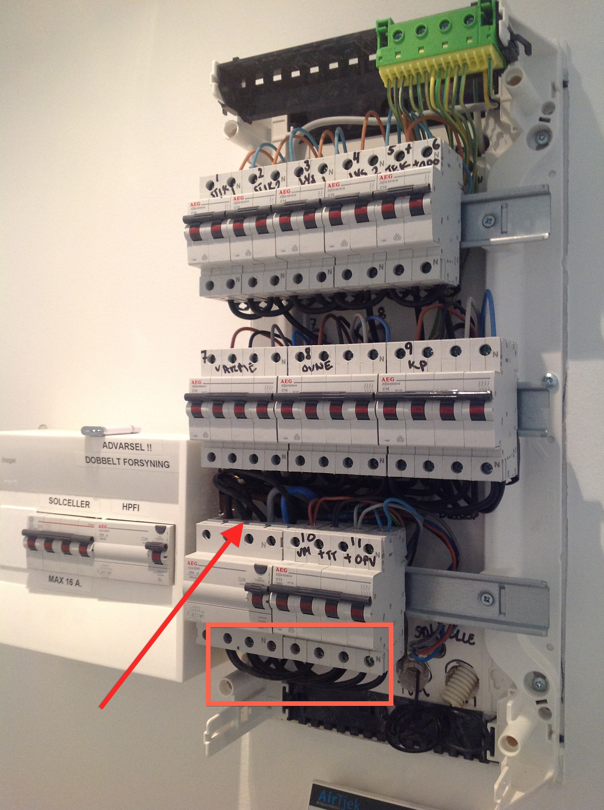

Hi,
I am just about to install the solar PV application, but there is not much space in my fusebox, as you can see from the attached pictures. Is it possible to get smaller current sensors? The wires in my box are very stiff, and I am not really able to seperate them that much.


Thanks
Re: Installation issues - smaller current sensors available?
I'm not aware of a smaller c.t. All I can suggest is you fit longer cables to loop into the empty space, and put your c.t. there.
Re: Installation issues - smaller current sensors available?
Hello!
Maybe it fits when you remove the blue plastic parts and hold together the two iron core parts with tape or cable tie.
Or can you mount it at the other side of the FI?
Re: Installation issues - smaller current sensors available?
I do NOT recommend removing the housing. The wire of the secondary winding is very fine and will break easily, and the core material is not iron, it is ferrite, a brittle material and that too can break very easily if it is stressed.
Re: Installation issues - smaller current sensors available?
Yes, you are probably right Robert. It is not something I'll do on my own, I'd better call an electrician.
Thanks
Re: Installation issues - smaller current sensors available?
For similiar purpose boutght a few YHDC TA12L-100 CT:s from ebay. Still pending to install those as I first need to get the EmonTX shield working - which it seems to be rigorously rejecting.
Re: Installation issues - smaller current sensors available?
mick, let the ectrician made some loops of all the blue fuse wires that are usefully for measurements.. I got a CT for the main load (all power) but also for some deticated fuses like the kitchen and garage.
Re: Installation issues - smaller current sensors available?
why not below the fuse breaker ?

Re: Installation issues - smaller current sensors available?
hmm... giving it some thought.....
the small box to the left with the text "solceller" and "hpfi"... last one is earth leakage fault relay (to prevent electro shock)
do both set of stiff wires for the fuse breaker come from there? if so it might be worth have a look in the smaller box also